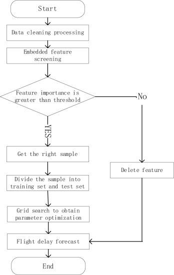
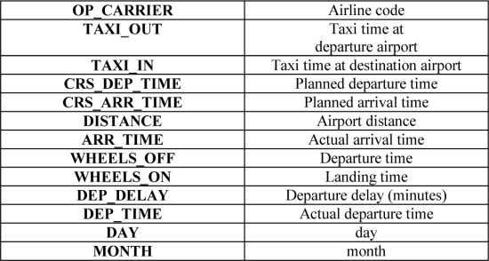
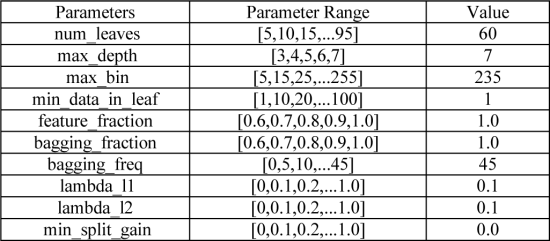
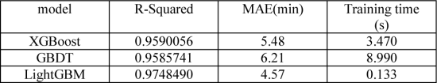

Flight delay prediction based on LightGBM
Abstract
With the rapid development of civil aviation industry, the number of flight delays continues to increase. Therefore, various airlines have an urgent need to predict the time of flight delays. The data used is from the data released by the US Bureau of Transportation Statistics (BST). The flight data of Atlanta Hartsfield-Jackson International Airport (ATL) is used as the research data. Data preprocessing is used to clean the data and extract the key data. This paper proposes to use the LightGBM algorithm to predict flight delays, and optimize the parameters of the model through grid search and cross-validation methods. The experimental results show that the LightGBM algorithm outperforms the comparative algorithms in terms of R-Squared, MAE, and training time metrics, exhibiting higher prediction accuracy and shorter training time compared to the XGBoost and GBDT algorithms.
Introduction
According to the 2019 "Global Airports and Airlines Punctuality Report", the actual number of flights departing from airports around the world in 2019 was about 37.12 million, with a punctual departure rate of 75.58%, and an average takeoff delay of 26.47 minutes. Among them, the actual number of flights departing from mainland China’s airports reached 4,802,300, with a punctual departure rate of 75.57%, and an average takeoff delay of 28.11 minutes. Flight delay not only disrupts passengers' time planning, but also brings a lot of negative effects, and affects subsequent flight schedule and the image of the company. Therefore, to predict the flight delay time, corresponding measures can be taken in advance to reduce or avoid the occurrence of the above situation, thereby reducing the impact of flight delays as much as possible.
Regarding the issue of flight delay prediction, domestic and foreign scholars have launched relevant research. Literature [1] proposed a flight arrival delay prediction based on a decision tree algorithm. Using data from a large domestic airport, a large number of experiments were designed, and the accuracy of the final prediction model was close to 80%. Literature [2] uses hidden Markov model and exponential smoothing forecasting method in the process of data mining to apply in delay prediction; Literature [3] cuts in from the aspect of delay chain spread, and proposes the delay of adopting Bayesian network method. The model can effectively predict the departure time and delay of downstream flights; literature [4] , [5] proposed a delay prediction model based on the support vector machine regression method, and the results can effectively predict flight delays. Literature [6] mainly addresses the problem of large amount of flight delay prediction data and difficulty in feature extraction, and proposes a flight delay prediction model based on dual-channel convolutional neural network (DCNN) with an accuracy rate of 92.1%. Literature [7] is based on the time series forecasting algorithm and adopts the ARIMA model. The experimental results show that the model has a good effect on flight delay prediction. Literature [8] uses a new multi-layer input layer neural network algorithm. This method predicts delayed flights at Kennedy Airport. It is compared with the traditional gradient descent back-propagation neural network model. The time required to train the neural network model is better than the traditional backpropagation method. Literature [9] detailed the source of the GBDT model. The core of the algorithm is to fit the current decision tree by learning the residuals of the previous decision tree. Literature [10] introduced an emerging deep machine learning optimization algorithm. The limit gradient boosting (XGBoost) algorithm can adapt to complex nonlinear relationships. The model has better parallel processing capabilities and can effectively solve the problem of overfitting. Literature [11] proposed a LightGBM model based on the upgrade of the XGBoost model. LightGBM adopts a leaf-wise split strategy, which refers to selecting the node with the largest classification gain among all current leaf nodes for splitting, which greatly reduces the training time of the model.
This study will combine the data from the BST website to analyze the impact of each feature on flight delays, and select features that have a higher impact on flight delays. LightGBM based on the tree model has the following five advantages: (1) faster training speed; (2) better model accuracy; (3) lower memory consumption; (4) supports parallel learning; (5) can process massive amounts of data quickly. Then based on the algorithm, a flight delay prediction model is constructed, and the experimental data used in the model is preprocessed and feature engineering. In the experimental part, the parameter optimization of the model is achieved through the grid search method. The experimental results show that, compared with the XGBoost and GBDT, the LightGBM model has more accurate predictions and less training time, which can provide valuable reference for the study of flight delay prediction.
Flight delay prediction based on LightGBM
A. Introduction to LightGBM algorithm
LightGBM is an open source, fast, and efficient improvement framework based on decision tree algorithms, supporting efficient parallel training.
Gradient Boosting: Iterate variables once, increase the sub-models one by one during the iterative process, and ensure that the loss function continues to decrease.
Suppose f i ( X ) is set as a sub-model, and the composite model is
The loss function is L [ F m ( x ), Y ], and every iteration and a new sub-model is added, the loss function continuously decreases toward the gradient of the variable with the second highest information content. L [ F m ( x ) , Y ] < L [ F m − 1 ( x ) , Y ]
GBDT (Gradient Boosting Decision Tree) is a classic model, namely
GBDT has the functional characteristics of gradient boosting and decision tree, and has the advantages of excellent training effect and not easy to overfit. LightGBM is a kind of GBDT, which is used to solve the problems encountered by GBDT in massive data processing.
The decision tree sub-model in LightGBM uses the method of splitting nodes by leaves, so its computational cost is relatively small. Because of this split method, it is necessary to control the minimum amount of data and the tree for each leaf node. In order to avoid the occurrence of over-fitting phenomenon, LightGBM chose a decision tree algorithm based on histogram to divide the feature value into many small "buckets", and then look for splits on these "buckets", which can reduce computing costs and storage costs. In addition, the processing of category features also enables LightGBM to have a better improvement under specific data.
B. Construction of flight delay prediction model
Firstly, the data is preprocessed, features are selected by embedding method, and features useful for model prediction accuracy are screened out, the selected data set is used as the input data set of the final model, and the data set is divided into training set and test set, Use the grid search method to find out the parameter combination that makes the model prediction optimal, use the LightGBM algorithm to train the training set to generate the model and then use the test set to predict. The specific process is shown in Figure 1 below.

Data acquisition, processing and analysis
A. Data preprocessing
The data used in this article are all downloaded from the BST website. The website mainly stores flight data from 1987 to the present. This article selects the U.S. flight data for the entire year of 2018 as an experiment. The amount of data is huge. Considering that large airports are less likely to cause delays due to their own reasons, so the Atlanta Hartsfield-Jackson International Airport (ATL) was selected as the departure airport, 23,665 sample data were collected from Los Angeles International Airport(LAX), Seattle-Tacoma International Airport(SEA), O'Hare International Airport(ORD), JFK International Airport(JFK), San Francisco International Airport (SFO) as destinations. Each sample contains 27 characteristics such as planned arrival time, distance from airport of departure, flight date, airline code, departure and destination airport code, planned departure time, actual departure time, actual arrival time and so on. Considering that the month is an important feature of the weather, the text data of the flight date is split and converted into a numeric value of year, month, and day.
(1) Missing value processing
Through the inspection of the data, it is found that the missing value is included when the planned arrival and departure time is equal to the actual arrival and departure time, the arrival and departure delay is a null value missing, the missing value is compensated by 0, and the average value is used to fill in the null value of the taxi time of arrival. For other samples with missing values, the proportion is very small, so the samples with null values are directly deleted.
(2) Data encoding and conversion
The non-numerical part of the data often needs to be re-encoded. The data in this article contains 15 airlines. The delay rate of each company is different, and the delay rate of low-cost airlines is often relatively high. Therefore, the airline code needs to be coded in an orderly manner. The delay rate of the airline company is arranged in order from small to large, and the airline code in the data is replaced with 1 to 15.
B. Feature selection
It is very important to select features that are useful for the flight prediction results. If the features include irrelevant feature attributes, the accuracy of the algorithm will be reduced. The embedding method is a method that allows the algorithm to decide which features to use, meaning that the algorithm training and feature selection are performed at the same time. First, LightGBM model is used for training, and the weight coefficient of each feature is obtained. The weight coefficient indicates the importance of the feature to some aspects of the model. The threshold parameter is set in sklearn using the SelectFromModel method and features below this threshold are considered unwanted to the model, the threshold set for the experiment is 0.001 and the final selection is made as shown in Table I below.

Experiment and result analysis
The LightGBM algorithm is an integrated algorithm that aggregates the results of all decision trees by building multiple decision trees on the data. There are many parameters in the algorithm model. In order to find the best combination of parameters, a grid search cross-validation method is used. Grid search refers to the exhaustive list of parameters. All possible values of the parameters are arranged and combined to obtain all the combined results, and then the results of each combination are used for LightGBM training, and cross-validation is used to evaluate the test set data. The parameter value with the highest score is obtained through the scoring function, and finally the optimal parameter combination among all parameter combinations is obtained. GridSearchCV is used in scikit-learn to realize the adjustment and evaluation of the parameters, and the optimal parameters are obtained as shown in Table II below.

The preprocessed data samples are divided into 30% test sample set and 70% training sample set. The established model is used to train the training sample set and forecast the test set. The R-squared is 0.988849, the mean absolute error (MAE) is 3.98 minutes, and the training time is 63ms. Finally, XGBOOST algorithm and GBDT algorithm are used to predict with the same data set, and the following table III is obtained.
Among them, the closer the R-Squared value is to 1, the closer the predicted value is to the true value; the MAE value can better reflect the deviation between the predicted value and the true value; the shorter the training time, the faster the algorithm runs. The results show that the LightGBM used in this paper has higher prediction accuracy and shorter training time.

Conclusion
This paper proposes a flight delay prediction model based on the LightGBM algorithm. First, it analyzes the features that have a great impact on flight prediction, which will affect the five major international airports such as (ATL) and Kennedy International Airport (JFK) in the United States. The flight data of the whole year in 2018 are preprocessed and feature engineering is carried out, and the method of combining grid search and cross-validation is used to optimize the parameters of the model. The data is randomly divided into training set and test set, and finally prediction is made on the test set. It shows that R-Squared is 0.9748490, and the mean absolute error (MAE) is 4.57 minutes. Compared with the GBDT and XGBoost algorithms, LightGBM algorithm is superior to comparison algorithm in R-squared, MAE and training time index, showing a higher prediction accuracy. In fact, there are many factors that affect flight delays, and the model in this article still has a lot of room for improvement, such as adding features like statutory holidays and weather to the data set to further improve the prediction accuracy of the algorithm model.
References
- Cheng Hua, Li Yanmei, Luo Qian, et al.. Research on arrival flight delay prediction based on C4.5 decision tree method[J]. System Engineering Theory and Practice , 2014, 34 ( 1 ): 239–247.
- Luo Feng'e, Zhang Chengwei. Flight delay forecast analysis based on time series data mining[J]. Modern Electronic Technology , 2014, 37 ( 24 ): 52–55.
- Cao Weidong, Lin Xiangyu. Flight overtime analysis and delay prediction based on Bayesian network[J]. Computer Engineering and Design , 2011, 32 ( 5 ): 1170–1172.
- Rebollo J J, Balakrishnan H. Characterization and Prediction of Air Traffic Delays[J]. Transportation Research Part C: Emerging Technologies , 2014.
- Luo Yunqian, Chen Zhijie, Tang Jinhui, et al.. Research on flight delay prediction using support vector machine regression [J]. Transportation System Engineering and Information , 2015, 15 ( 1 ): 143–149.
- Wu Renbiao, Li Jiayi, Qu Jingyi. Flight delay prediction model based on dual-channel convolutional neural network[J]. Computer Applications , 2018, 38 ( 07 ): 2100–2106+2112.
- Mo Fan, Zhao Zheng, Yin Taoran. Research on Airport Flight Delay Forecast Technology Based on ARIMA Model[J]. Aviation Computing Technology , 2018, 48 ( 03 ): 68–73.
- Sina Khanmohammadi, Salih Tutun, Yunus Kucuk. A New Multilevel Input Layer Artificial Neural Network for Predicting Flight Delays at JFK Airport [J]. Elsevier B.V. , 2016, 95.
- Jerome H. Friedman. Greedy function approximation: A gradient boosting machine. [J]. The Annals of Statistics , 2001, 29 ( 5 ).
- Chen T Q, Guestrin C. Xgboost:A scalable tree boosting system // Proceedings of the 22nd acm sigkdd internation conference on knowledge discovery and data mining-KDD’16. San Francisco : ACM Press the 22nd ACM SIGKDD International Conference, 2016 : 785–794.
- Ke G, Meng Q, Finley T, et al.. Lightgbm: A highly efficient gradient boosting decision tree[C] // Advances in neural information processing systems. 2017 : 3146–3154.